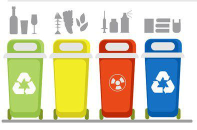
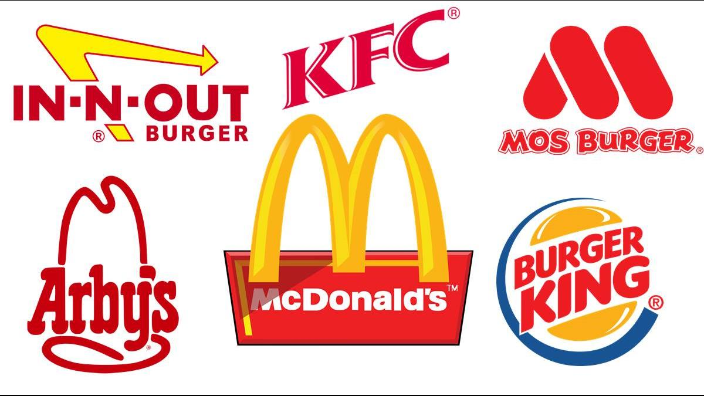

Culture Shock
近年來，越來越多僑生來到台灣求學，但文化差異的存在，讓他們在台灣生活上面臨不少問題，也曾經鬧出笑話，但他們並沒有因為種種差異被擊垮，反而是更努力的適應台灣的風土民情，融入在地生活。
在馬來西亞，不用像台灣一樣分 一般垃圾 塑膠類 紙類 寶特瓶....一大堆，還要分類丟好!在馬來西亞就是一個垃圾桶!!馬來西亞人來台灣覺得很麻煩，台灣人到馬來西亞覺得丟得很罪惡!
在台灣每當要別人簽名，大家都很自然地簽下自己的名字，這個舉動看在馬來西亞人的眼裡卻很不可思議，因為在馬來西亞，大家都會簽下一個屬於自己的符號，這樣才顯得獨一無二!
吃完麥當勞、肯德基、漢堡王等等速食餐廳，台灣人會很習慣的自己拿去分類丟到垃圾桶，甚至還會擦擦桌子，這個舉動讓馬來西亞的朋友覺得很欽佩，因為在大馬都有專門的人員負責處理這件事情。
由於馬來西亞是一個多元文化的社會，他們會學習到許多語言，因此，馬來西亞人在說話時會在一句話裡混合許多語言，而且語速會比台灣人還快，所以說話的習慣是馬來西亞人來台灣第一個需要適應的事情喔!